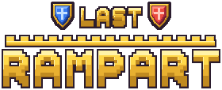
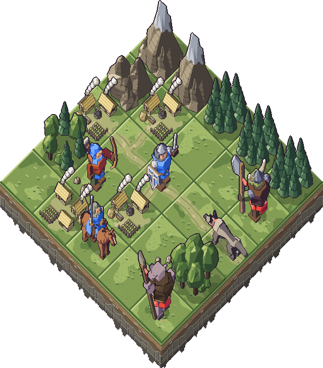
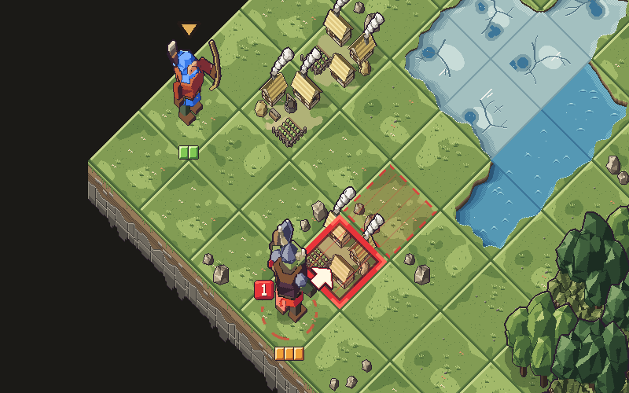
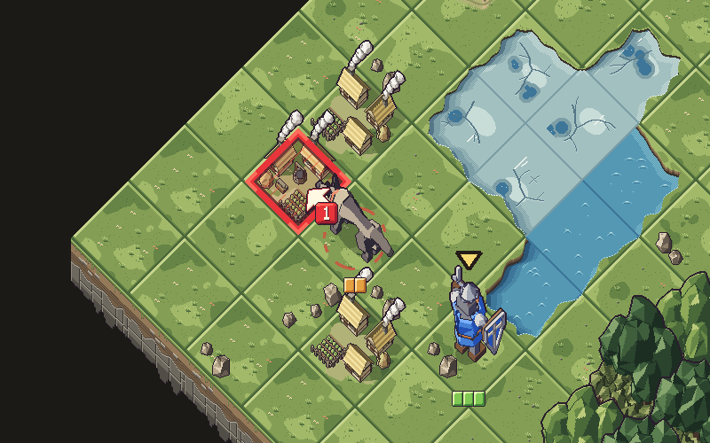
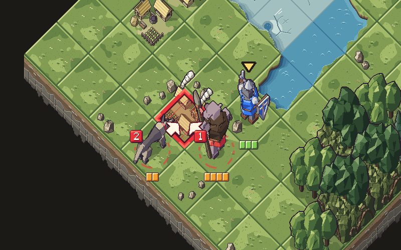
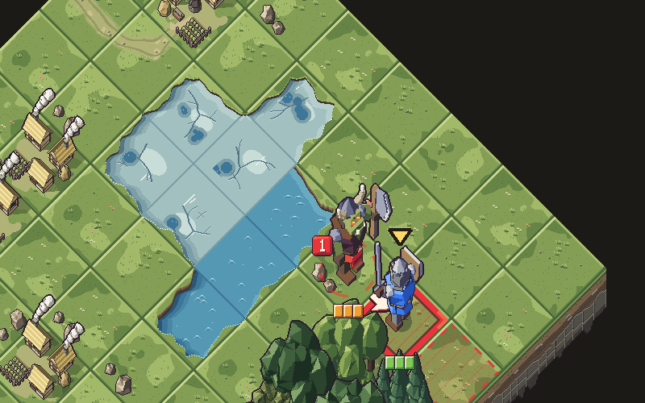

Une horde descend de Roche‑Noire. Vous êtes sur le chemin. Désolé.
Un jeu de tactique au tour par tour où chaque affreux montre sa cible un tour à l'avance. Vous avez ce tour-là pour que la baffe tombe à côté, ou sur son voisin. Si ça rate, on vous avait prévenu.
Rejoindre la bêta fermée
Tactique médiévale et baffes au tour par tour
Comment ça marche, en gros
Les monstres préviennent
Chaque affreux montre un tour à l'avance la case où il va taper. Poussez-le au bon endroit et sa baffe tombe à côté, ou sur son copain. Pourquoi ils préviennent ? C'est magique, cherchez pas.
Les hameaux crament
Chaque hameau détruit retire un point au Rempart, et le Rempart doit tenir tout le run. À zéro, retour au début avec vos regrets. Joie.
Les cartes changent tout le temps
Chaque carte est générée, les 9 boss compris, et l'ennemi peut débarquer de n'importe quel côté. Ennemis, renforts, météo et objectifs sont tirés au sort, donc inutile d'apprendre par cœur. Un défi facultatif corse la mission, pour ceux que ça n'a pas encore calmés.
Les reliques changent les règles
30 babioles pour marcher sur l'eau ou pousser les ennemis de deux cases, sans +1 ni malus. Ratez un défi à relique et vous récoltez un « pas de chance » à la place. Bien fait.
Dix étapes jusqu'à Roche‑Noire
Entre deux missions, les crédits paient les améliorations de vos soldats, qui en ont bien besoin. Une mission dure quelques minutes, téléphone en paysage. Gratuit, financé par la pub : il faut bien payer la solde de quelqu'un.
Trois compagnies, zéro volontaire

Les Volontaires Désignés
Un pousse, un crame, un harcèle, un tire droit. Et un seul Rempart.
Aucun ne s'est porté volontaire. Le sergent a pointé du doigt.

Les Gardiens des pierres
Lever un mur, puis lui présenter l'affreux : charge, poudre, lancer.
Ils bâtissent des murs pour y écraser des gens. Drôle de maçonnerie.

Le Cercle des arcanes
L'affreux tape son copain : échanger, retourner, attirer, souffler.
Deux sur quatre ne tapent jamais. Personne ne sait qui les a engagés.
Une baffe vaut mille mots




La bêta fermée, en attendant
Le jeu n'est pas encore sorti, mais il cherche des testeurs Android. C'est gratuit, ça prend deux minutes, et il faut suivre les étapes dans l'ordre. Google aime l'ordre.
-
1. Rejoindre le groupe
Ouvrez le groupe des testeurs et cliquez sur « Rejoindre le groupe », avec le même compte Google que votre téléphone. Sinon, Google ne vous reconnaîtra pas.
-
2. Devenir testeur
Ouvrez la page du test, toujours avec ce compte, et cliquez sur « Devenir testeur ». Oui, c'est tout.
-
3. Installer le jeu
Installez-le depuis sa fiche Google Play. Elle ne s'ouvre qu'aux testeurs : si elle boude, patientez quelques minutes, Google aussi a ses lenteurs de garnison.
Deux services à rendre : gardez le jeu installé au moins 14 jours (Google compte les testeurs, chaque désinstallation me renvoie à la case départ), et dites-moi ce qui cloche par le formulaire de signalement. Même « c'est nul », je prends. Avec des détails, de préférence.